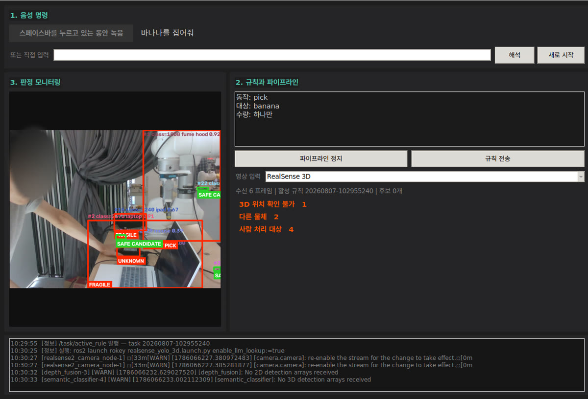
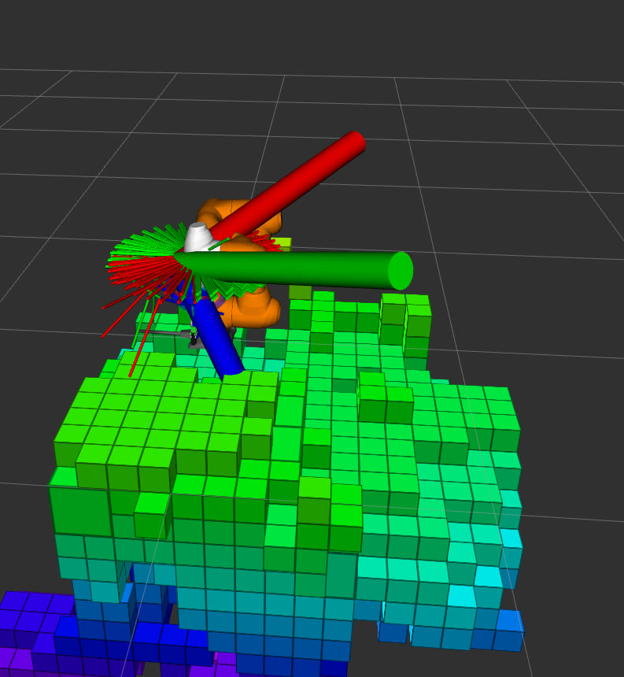
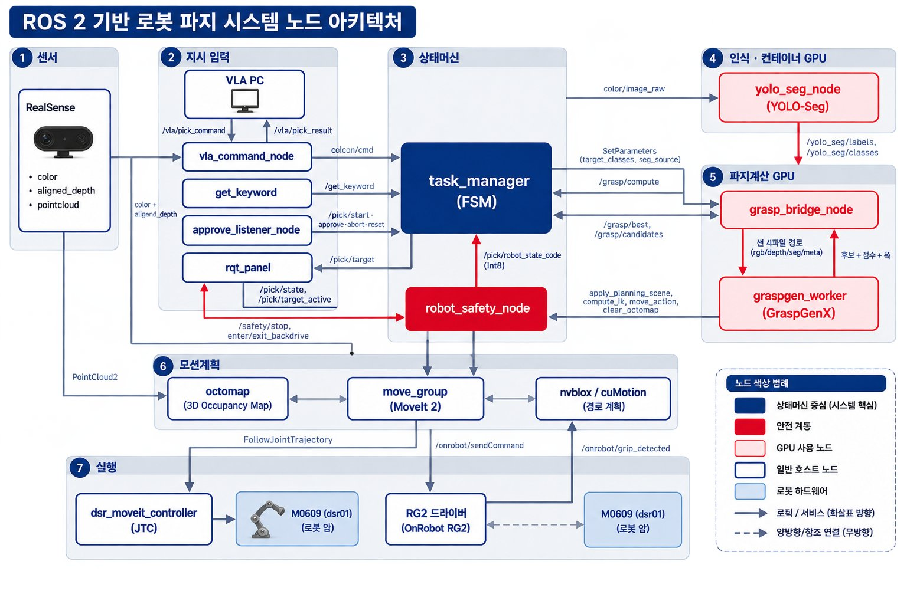
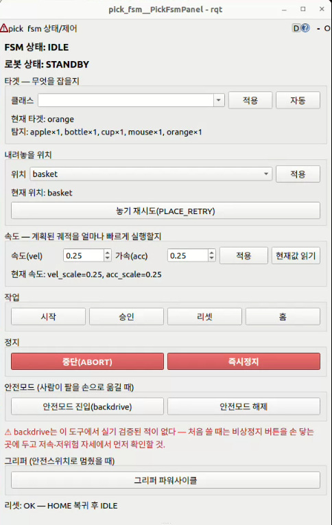

한눈에 보기
- 마트 계산대에서, "사과 바구니에 담아줘" 같은 자연어 지시를 LLM(대규모 언어 모델)이 해석하고 협동로봇이 물체의 위치와 형상을 인식해 장애물을 피해 집어 옮기는 것이 목표였습니다.
- 5인 팀에서 저는 로봇 구동 파트의 작업 제어(FSM)를 맡았고, GPU 한 대의 메모리를 나눠 쓰도록 조정하고, 파지(물체 집기) 모델과 다른 실물 그리퍼(로봇 손)를 실측해 맞췄습니다.
- 판단(VLA)·작업 제어(FSM)·인식 세 패키지를 실제 카메라 장면에서 이어, 장애물을 회피하며 지시 물체를 집어 목적지에 놓고 홈 위치로 돌아오는 과정(pick-and-place)까지 확인했습니다. 앞서 구동 중 사람이 작업영역에 손을 넣으면 멈추고 새 경로로 다시 계획하는 동작도 팀원들과 실기로 확인했습니다. 노드들의 성능을 조절해 실행 중 장애물 회피(cuMotion)와 GPU 모듈을 모두 동시에 띄울 때의 메모리 여유도 조절했습니다.
- 부트캠프의 마지막 프로젝트로, 앞선 ROS2 프로젝트 3개를 거쳐 쌓인 프로젝트 협업 개발 경험과 판단·인식·모션·안전을 한 시스템으로 묶었습니다.
- VLA(보고·말을 알아듣고·움직이는 로봇)는 팀이 판단 계층 코드와 발표 자료에 쓴 이름입니다. 이 페이지의 VLA는 카메라 인식과 자연어 지시로 집을 물체와 놓을 곳을 정하는 판단 계층이고, 실제 이동은 작업 제어(FSM)가 맡습니다.
1분 시연 영상
무엇을 만들었나
사람이 말로 지시하면 카메라로 물체를 찾아 집을 자세를 고르고, 로봇 팔이 정해진 순서대로 집어 옮기는 것을 목표로 만든 협동로봇 시스템입니다. 지시를 해석하는 판단 계층과 로봇을 움직이고 멈추는 작업 제어 계층으로 나뉩니다.
말로 한 지시를 해석하는 판단 계층
팀은 음성이나 글로 받은 지시를 "어떤 물체를 어디로"로 정리하는 판단 계층과 조작 화면을 만들었습니다. 간단한 지시는 미리 정한 규칙으로, 맥락이 필요한 지시는 언어 모델과 카메라 사진으로 해석합니다.


물체를 찾아 집을 자세 고르기
RGB-D 카메라를 통해 생성한 점군 데이터를 기반으로 GraspGenX(Nvidia의 파지 파운데이션 모델)을 활용한 파지 자세를 연산 및 최적 자세를 선정합니다.

형태가 다른 여러 물체(콜라병, 바나나 등)로 넓혀 보려 했지만, 물체의 점구름이 바닥(테이블)과 뭉개져 형상을 구분하기 어려웠고 이런 물체들은 집지 못했습니다. 깊이까지 재는 카메라(RGB-D)의 해상도를 올려 점구름을 촘촘하게 만들면 나아질 수 있었지만, 노트북 성능상 진행할 수 없었습니다. 파지 모델은 1280×720 해상도를 요구했으나 깊이 영상을 그 해상도로 올리면 카메라 프레임이 끊겨(USB 대역폭 초과로 추정) 쓸 수 없었고, 해상도를 올리면 장애물 지도 갱신(CPU 계산) 부하도 크게 늘어 낮은 해상도를 유지했습니다. 당시 GPU 메모리는 이미 8,188MiB 중 6,752MiB가 쓰이고 있었고, CPU도 대부분 80% 이상으로 돌고 있었습니다.


파지 모델 도입 건의와 인식·모델 연결, 실물 그리퍼 보정 등 제가 맡은 진행 과정은 아래 사례에서 다룹니다.
단계별로 움직이고 멈추는 작업 제어(FSM)
저는 로봇 구동 파트에서 작업을 인식 → 계획 → 집기 → 옮겨 놓기 단계로 나눠 순서를 정하는 상태머신(FSM)을 맡았습니다. 판단 계층은 무엇을 어디로 옮길지 같은 지시만 넘기고, 로봇 팔은 이 FSM만 움직입니다.
정지와 그리퍼 판단은 팀이 정한 안전 규칙을 따릅니다. 예를 들어 "멈춰"는 언어 모델을 거치지 않고 바로 일시정지로 이어지고, 물체를 든 채 멈추면 그리퍼를 자동으로 열지 않습니다.
개발 중의 FSM에는 승인 대기 단계가 있었습니다. 계산한 집는 자세가 안전한지 사람이 화면으로 확인하고 승인해야 로봇이 움직이는 단계입니다. 작업 제어 프로그램의 구현을 마무리했다고 판단한 뒤에는 승인을 자동으로 넘기도록 바꾼 것으로 기억하며, 이후 판단·인식 쪽 프로그램과 결합하는 단계로 넘어갔습니다.


진행 과정
과제는 "AI(Computer Vision) 기반 협동 로봇 작업 어시스턴트 구현"이었습니다. 팀은 이전 협동로봇 프로젝트에서 교시좌표(로봇이 이동할 위치로 미리 지정해 둔 좌표)를 일일이 지정해야 했던 경험에서 출발했습니다.
그래서 구현할 기능(LLM 지시 해석·GPU 경로계획)을 먼저 고르고 역할을 나눈 뒤, 이 기능들을 엮을 시나리오로 사람과 협업하는 마트 계산대를 정했습니다.
파지 모델 도입 제안
이전 협동로봇 프로젝트에서 카메라 없이 좌표를 일일이 교시해야 했던 불편이 있었습니다. 그리퍼(로봇 손)가 물체를 집을 자리를 스스로 찾는 GraspGenX의 시연이 눈에 들어왔고, 시연 영상과 문서로 어떤 기술이고 어디에 쓸 수 있는지 찾아봤습니다. 협동로봇에 붙이면 직접 교시하던 수고를 대신할 수 있겠다고 판단해, 미리 정해 둔 파지(물체 집기) 자세 대신 GraspGenX(물체 형상을 보고 집을 자세 후보를 만드는 딥러닝 모델)를 쓰자고 팀에 건의했습니다. 물체의 3차원 캐드(CAD) 모델이 미리 필요한 다른 후보 방식 대신, 팀은 캐드 없이 카메라 영상으로 바로 파지 후보를 생성하는 GraspGenX를 시작점으로 삼았습니다.
저는 카메라가 찾은 물체 영역을 모델에 넘기고, 나온 후보를 점수·도달 범위·접근 방향으로 걸러 하나를 고르는 연결을 맡았습니다. 당시 노트북 GPU 한 대(8GB)를 여러 모듈과 함께 써야 했기에, 파지 후보 수를 기본 200개에서 64개로 줄여 시작했습니다. 이후 08-11 실제 카메라로 찍은 6~9개 물체 장면에서 VLA가 지정한 물체가 GraspGenX 파지 후보까지 이어지는 것을 확인했습니다.
관심이 가는 기술을 만나면 지금 작업의 불편(교시 부담)을 덜어 줄 쓸 자리부터 확인하고 제안하는 방식으로 일했습니다.
체커보드 평평함 보정과 좌표 캘리브레이션
작업대 옆에 고정한 카메라가 본 위치를 로봇 기준 좌표계로 변환하기 위해, 로봇 팔에 체커보드(좌표 계산용 격자무늬 판)를 붙이고 움직이며 상대 좌표를 구하는 캘리브레이션(카메라와 로봇의 좌표계를 맞추는 작업) 데이터를 수집했습니다. 그러나 목표 물체의 실제 위치와 시뮬레이션 화면 속 위치 사이에 오차가 크게 나타났습니다. 저는 캘리브레이션 로직을 검토하며 원인 후보를 체커보드의 평평함과 일정한 조명, 수집 데이터의 각도와 위치 다양성, 계산 평가 로직의 세 가지로 나누었습니다. 그중 보드의 평평함이 중요하다고 판단했습니다.

처음에는 체커보드 뒤를 우드락으로 받쳐 시험했으나 정확도가 떨어졌습니다. 이에 플라스틱 파일철에 체커보드를 붙여 지지하고, 그리퍼(로봇 손)가 직육면체 블록을 정확히 물게 하여 여러 각도로 회전하며 데이터를 모으는 동안 보드가 평평하게 고정되도록 수집 방식을 바꿨습니다. 카메라 마운트 위치를 테이프와 사진으로 남기며 고정하는 작업은 팀원들과 함께 진행했고(공동작업), 데이터 수집 방식과 재수집 여부 판단은 제가 맡았습니다. 이후 물체 위치와 시뮬레이션 위치가 비슷해져 그 위에서 파지 후보 생성과 우회 경로 생성·이동을 이어 갔습니다. 다만 그 뒤 다시 모은 캘리브레이션 데이터도 회전 오차가 평가 스크립트의 정량 기준을 넘어 불합격으로 판정됐습니다.
위치 오차의 원인 후보를 나눠 놓고 하나씩 진행하면서, 계산 결과만 보지 않고 체커보드처럼 데이터를 만드는 실물 도구의 상태부터 점검하고 고정해야 한다는 점을 배웠습니다.
카메라·파지 모델 실기 검증 — 위치 오차 실측과 원인 분리
작업대 옆에 고정한 카메라와 GraspGenX(카메라 영상을 보고 물체를 집을 자세 후보를 생성하는 딥러닝 모델)를 실기에서 검증하던 08-05, 물체 위치가 카메라 시선 방향으로 약 1.7cm 앞에 찍히는 것을 실측했습니다. 카메라와 로봇의 좌표계를 맞추는 캘리브레이션 값을 고쳐 오차를 없애고 싶은 상황이었습니다. 그러나 깊이 카메라(물체까지의 거리를 재는 카메라) 영상으로 계산한 위치는 물체 전체의 중심이 아니라 카메라에 보이는 앞쪽 표면의 중심이라는 점을 수식으로 유도했습니다. 구 모양 물체는 중심보다 반지름의 3분의 2만큼 카메라 쪽으로 찍히므로(반지름 2.5cm 사과면 약 1.7cm로 실측과 일치), 이 오차는 좌표계 불일치가 아니라 보이는 표면만 재서 생긴 편향이었습니다. 같은 시기에 파지 모델이 내놓는 자세의 기준점과 로봇 공구 끝 기준점(TCP)을 혼동해, 접근 방향이 기울면 그 기준점이 옆으로 비켜나는 차이(30° 기울면 약 9cm 옆)를 "좌표 오차"로 잘못 보았던 것도 따로 분리했습니다.

저는 캘리브레이션 값은 고치지 않고, 이 편향을 캘리브레이션으로 보정하지 말라는 경고를 코드와 문서에 남겨 없는 오차를 보정해 새 오차를 만들지 않도록 했습니다. 이 판단이 파지 성공률에 준 효과는 기록이 없습니다. 오차가 보이면 수치부터 맞추기보다, 데이터가 어떻게 측정되고 계산되는지에서 원인을 먼저 나눠 봐야 한다는 점을 배웠습니다.
실물 그리퍼 실측 보정
그리퍼 모델을 시뮬레이션(RViz2)에 올려 먼저 시험했을 때는 정상이었지만, 실기에 올리자 모델과 실물의 규격 차이가 드러났습니다. 파지 자세를 손목 끝 기준으로 잘못 해석해 실기에서 그리퍼가 90° 눕는 문제가 발생하기도 했습니다. GraspGenX 모델은 그대로 두고, 우리 쪽 로봇 모델 파일(URDF)과 그리퍼 코드에서 차이를 흡수하기로 했습니다. 저는 두 모델 파일의 회전값을 행렬로 펼쳐 비교해 파지 기준점을 그리퍼 몸체로 확정했습니다.
저는 펜던트(로봇 조작기)에서 공구 끝 기준점을 설정하고 그리퍼를 수직으로 세워 천천히 내려 접촉 지점까지 직접 측정했습니다. 실측 결과 로봇 팔과 그리퍼 사이에 22mm 브라켓이 끼어 있었고, 손끝 길이도 다물었을 때 모델보다 38mm 길다는 점을 확인했습니다. 또한 힌지 구조라 그리퍼를 벌릴수록 손끝까지의 길이가 짧아지는 점을 고려해 벌림 폭별 손끝 길이 보정표를 만들어 그리퍼 코드에 반영했습니다. 닫힘 폭에 여유를 더해 물체에 닿기 전에 멈추던 부호 오류도 바로잡았습니다.

벌림 폭별 손끝 길이 보정은 충돌 검사용 그리퍼 모양과 RViz(로봇 상태 시각화 도구) 표시에 반영했고, 로봇이 도달할 목표 자세(IK 목표) 자체는 바꾸지 않았습니다. 파지 성공률에 준 효과는 미검증입니다. 시뮬레이션에서 정상으로 검증된 모델이라도 실물에서는 그리퍼의 실제 치수와 기준을 다시 재서 맞춰야 한다는 점을 익혔습니다.
충돌 검사용 구 모델 제작과 계획 실패 원인 규명
GPU 기반 경로계획 도구(cuMotion)를 쓰려면 로봇 팔과 그리퍼(로봇 손) 외형을 여러 개의 구 묶음으로 단순화한 충돌 모델 파일(XRDF)이 필요했습니다. 사용 중인 협동로봇과 그리퍼 조합에 맞는 기성 파일이 없어 직접 만들어야 했고, 만드는 시간이 도입 일정을 잡아먹을 수 있는 일정 위험이 있었습니다. 그래서 3차원 형상 데이터의 정점을 구간별로 묶어 구를 배치하는 스크립트로 모델 초안을 만들고, 관절 한계와 기존 로봇 설정 파일의 값을 가져와 채웠습니다.
로봇을 움직이지 않고 경로만 계산해 보는 계획 시험(시뮬레이션)을 하자, 모든 관절 각도가 0인 기본 자세에서도 로봇이 스스로와 부딪힌다고 판정(자기충돌)되어 경로 생성이 실패했습니다. 저는 진단 스크립트로 부딪힌다고 나온 마디(링크) 쌍의 겹침 크기를 확인하고, 실제 3차원 외형을 그대로 쓰는 CPU 경로계획(OMPL)에 같은 자세를 넣어 10회 모두 통과하는 것을 확인했습니다. 두 결과를 대조해 마디 형상이 아니라 단순화한 구가 마디 단면보다 커서 생긴 실패임을 가려냈습니다.
겹친 6개 마디 쌍을 충돌 무시 목록에 넣어 계획 시험을 20회 모두 통과시켰습니다. 다만 그중 2개 쌍은 충돌 보호를 포기한 것이고 구 크기를 다시 맞추지는 못했습니다. 이 검증은 모두 로봇을 움직이지 않는 계획 시험에서 했습니다. 모델에 문제가 생기면 같은 조건을 다른 도구로 돌려 결과를 대조해 원인을 가르고, 일정 때문에 우회한 부분은 무엇을 포기했는지 기록으로 남겨야 한다는 점을 배웠습니다.
작업 환경 3D 데이터 확인
작업 환경 주변의 3차원 데이터가 장애물 지도에 어떻게 반영되는지 확인하는 작업을 했습니다. 프로젝트에는 장애물 지도가 두 가지 있었습니다. 경로계획 도구(MoveIt)가 CPU로 계산하는 octomap(공간을 작은 큐브 칸으로 나눠 물체가 있는 칸을 채우는 지도)과, GPU로 계산하는 nvblox(3차원 장애물 지도)입니다.
저는 평평한 노트북 케이스를 작업 영역에 넣었다 빼면서, 두 지도의 반응을 같은 화면(RViz, 로봇 상태 시각화 도구)에서 나란히 비교했습니다. nvblox 쪽이 먼저 반응했고, 케이스를 뺀 뒤에도 더 빨리 사라졌습니다. 반응 시간을 수치로 재지는 않았습니다.
공간 정보 매핑을 CPU로 계산하는 노드와 GPU로 계산하는 노드의 성능 차이, 곧 연산 방식의 차이를 실제 장면에서 확인한 예시가 되었습니다.
단일 GPU 메모리 조정
3차원 장애물 지도(nvblox)·GPU 경로계획(cuMotion)·물체 영역 분할(YOLO-seg)·파지 후보 생성(GraspGenX) 모듈이 노트북 GPU 하나(8GB)를 나눠 써야 했습니다. 저는 한정된 메모리 안에서 안정적으로 구동하기 위해 무엇이 메모리를 잡는지부터 실측했고, 물체 인식 모델은 병목이 아니며 실제 병목은 파지 후보 생성 모델이라는 것을 확인했습니다. 그래서 물체 인식 모델을 더 빠른 실행 형식으로 바꾸는 최적화는, 변환하는 동안 GPU를 점유해 다른 모듈과 겹치는 등 비용이 커 하지 않기로 했습니다.
또한 프로그램을 다시 실행할 때마다 컨테이너 안에 물체 인식 노드가 쌓여 GPU 메모리를 차지하고 마스크(물체 영역)가 뒤섞이던 문제를 확인했습니다. 실행 래퍼와 중복 실행 방지 락(lock, 이미 떠 있으면 새로 띄우지 않게 막는 장치)을 만들어 노드를 1개로 정리했습니다. 파지 실패를 재현하는 과정에서는 이미 떠 있던 파지 워커와 중복 로드되어 메모리가 부족해지던 원인도 확인했습니다.
최대 10개까지 쌓이던 물체 인식 노드를 1개로 줄인 것을 실사용에서 확인했습니다(래퍼 상태에서 Ctrl-C 종료 전달은 미검증). 성능 최적화에 무작정 뛰어들기보다 실제 병목의 위치를 먼저 측정한 뒤 손댈 곳을 가려내는 판단 방식을 배웠습니다.
로봇 제어 일원화와 시스템 통합
판단·인식 파트와 로봇 구동 파트의 시스템을 합치는 단계에서, 양쪽 모두 로봇 팔에 명령을 보낼 수 있는 구조적 문제를 확인했습니다. 제어 주체가 겹치면 물리적 충돌로 이어질 수 있어, 팀과 협의해 판단 계층의 팔 제어부를 걷어 내고 작업 제어(FSM)만 로봇 팔을 움직이도록 정했습니다. 이 결정으로 손목 카메라를 이용한 재파지 기능이 빠졌고, 나중에 복원할 수 있도록 빈 서비스 인터페이스를 남겨 두었습니다. 카메라 구성 역시 기존 2대에서 거치형 1대를 공유하는 방식으로 정리했습니다.

이어 판단 계층의 명령을 FSM 요청으로 바꿔 전달하는 노드와 인식 및 FSM 간의 연결을 구축했습니다(공동작업). 08-11에 판단(VLA)·작업 제어(FSM)·인식 세 패키지가 실제 카메라 장면에서 이어지는 것을 확인했습니다. 앞서 5일차쯤에는 팀원들과 함께 OMPL(경로계획 라이브러리) 경로로 움직이는 중 사람이 작업영역에 손을 넣으면 멈추고 새 경로로 다시 계획하는 동작을 실기로 확인했습니다.
08-11에는 지시한 물체를 실물로 집어 목적지에 놓고 홈 위치로 돌아오는 전체 과정(pick-to-place)까지 이어지는 것을 확인했지만, 성공률은 재지 않았습니다. 여러 시스템을 통합할 때는 로봇을 움직이는 주체부터 하나로 명확히 정해야 하며, 구조를 정리하며 잃는 기능은 인터페이스 계약으로 복원 지점을 남겨야 한다는 점을 배웠습니다.
팀에서 일한 방식
팀은 전공을 기준으로 판단·인식을 맡는 VLM(영상과 언어를 함께 다루는 모델) 파트 3명과 로봇 구동을 맡는 M0609 파트 2명으로 나눴습니다.
저는 M0609 파트에서 pick 상태머신(FSM, 작업을 단계별 상태로 나눠 순서를 제어하는 구조)과 인식·파지 연결, 안전 노드(독립적으로 도는 프로그램 단위) 통합을 맡았습니다(공동작업).
팀은 실질 14일의 일정 동안 주말에도 매일 의견을 나누며 개발을 진행했습니다. 부트캠프 공통 협업 방식을 바탕으로 메인 자료 공유는 Slack, 일일 주요 변경사항과 기록은 Notion, 코드 버전 관리와 공유는 GitHub, 최종 발표 자료는 Google Drive로 용도를 나눠 썼습니다.
초기에는 컨베이어 벨트 모형으로 마트 계산대를 모사하려 했으나, 구동 테스트까지 해 보니 파지(물체 집기) 모델과 맞지 않았고, 벨트 폭이 좁아 큰 효과를 기대하기 어려웠으며, 판단 계층 튜닝도 어려웠습니다. 이에 팀은 6~7일차쯤 컨베이어 벨트를 제외하고 고정 작업대로 개발 범위를 좁히기로 결정했습니다. 두 파트의 시스템을 통합하며 로봇 팔 제어 주체를 하나로 정한 과정은 앞선 진행 과정에 적었습니다.
본인 담당:
- VLA 작업 지시 전달 및 디버깅·모니터링을 위한 FSM 상태 구분과 감지 실패 예외 처리 연동(공동작업)
- 파지 모델(GraspGenX)과 실물 그리퍼(RG2)의 차이 실측·보정
- GPU 메모리 대응(파지 후보 수 조정, 중복 실행되던 물체 인식(YOLO) 노드 정리)
- 구동 중 정지 후 재계획 연결
- 장애물 지도 서비스가 없으면 이동을 막는 점검 게이트(팀 모션 코드 위에 제안·구현, 최종 작업 흐름에 연결하지 않은 실험 코드)
- 실기 설정값의 정본을 설정 파일(yaml)에 두고 실행 옵션(launch 인자)과 분리
배운 점
처음 다루는 도구는 다음과 같이 익혔습니다.
- MoveIt(로봇 팔의 이동 경로를 계획하는 프레임워크)·GraspGenX(물체를 집을 자세를 생성하는 딥러닝 모델) 등은 공식 문서와 데모 예제로 익혔습니다.
- GraspGenX와 GPU 경로계획·장애물 지도 라이브러리는 실제로 쓰는 버전의 소스 코드까지 읽었습니다.
- 장비 기본 사용은 부트캠프 공통 교육으로 익혔습니다.
새로운 오픈소스 모델이나 시뮬레이션의 수치를 그대로 믿기보다, 현장의 실물 그리퍼 치수를 재서 우리 쪽 코드에서 차이를 흡수하는 기준을 세웠습니다.
기술 상세
진행 흐름·막힌 지점·결과·계층 구조·시스템 구성 펼쳐 보기
진행 흐름
- 07-30~31 — 구현할 기능을 고르고, 전공에 맞춰 판단·인식(VLM) 파트와 로봇 구동(M0609) 파트로 역할을 나눈 뒤 마트 계산대 시나리오를 확정했습니다.
- 08-01~02 — 개발 환경을 구축하고 로봇 구동·MoveIt 연동과 음성 인식 초기 이식을 진행했습니다.
- 08-02~04 — 미리 정한 파지 자세 대신 GraspGenX로 집을 자세를 만드는 방식으로 바꿨고(본인 건의), GPU 없는 노트북에서 3차원 충돌회피 기준선을 확인했습니다.
- 08-04~08 — 팀 공유 GPU 노트북에서 장애물 지도·GPU 경로계획을 시험하고, pick FSM과 GraspGenX 연결을 파트별로 나눠 개발했습니다. 중반에 컨베이어 벨트로 계산대를 모사하려던 계획을 빼 고정 작업대로 범위를 좁혔고, 08-08에 VLA 통합 범위를 확정했습니다.
- 08-09~11 — 판단 계층의 명령을 FSM이 받는 요청으로 바꿔 전달하는 프로그램(노드)과 인식↔FSM 연결을 만들고, 놓기·통합 테스트를 거쳐 08-11에 VLA·FSM·인식 세 패키지가 실카메라 장면에서 이어지는 것을 확인했습니다.
- 08-12 — 발표.
막힌 지점과 판단
① GPU 메모리 부족
- 후보 수 조정: GPU 메모리를 장애물 지도·경로계획 모듈과 함께 써야 해서, GraspGenX의 파지 후보 수를 기본 200개에서 64개로 줄여 시작했습니다.
- 노드 누적: 다시 실행할 때마다 컨테이너 안에 물체 인식(YOLO) 노드가 쌓여 10개까지 늘고(GPU 메모리 2.6GB 차지, 보조 메모리 소진) 마스크가 뒤섞였습니다. 실행 래퍼와 중복 실행 방지 락(lock)을 만들어 1개로 정리했습니다(래퍼 상태에서 Ctrl-C 종료 전달은 미검증).
- 병목 확인: 실측해 보니 YOLO는 상주 120MiB·추론 6.7ms로 병목이 아니었습니다. 실제 병목은 GraspGenX였습니다.
- 파지 실패를 재현하는 중에는 이미 떠 있는 GraspGenX 워커와 중복 로드되어 GPU 메모리 부족(CUDA OOM)이 나는 것도 원인까지 확인했습니다.
② GraspGenX를 실물 RG2에 맞추기
- GraspGenX는 유지, URDF·그리퍼 코드에서 보정: GraspGenX 모델은 그대로 두고 로봇 모델 파일(URDF)과 그리퍼 코드에서 차이를 흡수했습니다. 실측 오프셋을 반영하고, 벌림 폭에 따른 손끝 길이를 추정하는 보정표를 만들어 충돌 모델 배치와 RViz(로봇 상태 시각화 도구) 표시에 썼습니다. 로봇이 도달할 목표 자세(IK 목표) 자체는 바꾸지 않았습니다.
- 90° 눕는 문제: 파지 자세를 손목 끝(
tool0) 기준으로 잘못 해석해 그리퍼가 90° 눕는 문제가 있었습니다. 두 URDF를 회전행렬로 비교해 기준을 그리퍼 몸체(rg2_base_link)로 확정했습니다. - 폭·힘 규약: 닫힘 폭에 여유를 더해 물체에 닿기 전에 멈추던 부호 오류를 고쳤습니다. 드라이버 폭 단위(1/10mm)와 사과를 으깨던 기본 파지력(40N)은 규약으로 정리했습니다.
③ VLA 노드와 기존 FSM 통합
- 제어부 일원화: 팀과 협의해 VLA의 로봇 제어부를 걷어 냈습니다. VLA는 "어떤 물체를 어디로"만 넘기고 좌표·파지 계산과 이동은 FSM이 전담합니다.
- 카메라 정리: 카메라를 2대에서 거치형 1대 공유로 정리했습니다. 빠진 손목 카메라 재파지 기능은 빈 서비스 인터페이스(
AcquireTarget.srv)로 복원 지점만 남겼습니다.
④ 인지 실패 감지 — 장애물 지도 반영 점검 (공동작업, 실험 코드)
장애물 인식이 멈춰도 경로 계획은 "장애물이 없는 세상" 기준으로 성공해 버리는 문제가 있었습니다. 저는 원인 후보를 서비스 미기동·설정 오류·반영 지연 세 가지로 나누고 로봇을 움직이지 않고 계획만 실행해 재현했습니다. 그다음 팀 모션 코드 위에, 장애물 지도 서비스가 없으면 이동을 거부하는 게이트와 계획에 반영된 장애물 복셀(3차원 지도 칸) 수 기록을 제안·구현했고 설정 오류는 사전 점검 모드로 잡게 했습니다. 이 코드는 최종 pick FSM 경로에 연결하지 않은 실험 코드입니다.
⑤ 모션플래닝 실험 (공동작업)
cuMotion(GPU로 경로를 계산하는 모션플래닝 라이브러리) 경로가 실행 중 장애물을 밀고 가는 것을 실기에서 확인했고 "계획할 때만 장애물을 읽는다"는 가설을 세웠습니다. cuMotion이 출발 전 장애물 우회는 지원하지만 실행 중 실시간 회피는 지원하지 않는다는 것을 알고, 그 방법을 찾으려 재계획과 플래너 구성을 탐구했습니다. 실행 중에도 장애물에 반응하는 RMPflow를 검토했지만 설치된 cuRobo에는 없어 MPC(앞으로의 움직임을 예측해 제어값을 정하는 방식)를 ROS로 감싸는 방법을 따로 검토했습니다. 3Hz 재계획 루프는 함께 시험해 보았지만, 본격적으로 개발하기에는 시간이 촉박해 팀 전체가 매달리지 못하고 설계·실험 단계에서 끝났습니다.
결과와 검증 한계
- YOLO 노드 누적을 10개에서 1개로 줄인 것을 실사용에서 확인했습니다.
- 실제 카메라로 찍은 6~9개 물체 장면에서 VLA가 지정한 물체가 GraspGenX 파지 후보까지 이어지는 것을 확인했습니다.
- 08-11에 지시한 물체를 실물로 집어 목적지에 놓고 홈 위치로 돌아오는 과정(pick-and-place)을 실물로 확인했습니다(판단 계층 대화 기록의 완료 메시지와 FSM 상태 기준). 성공률·반복 횟수는 기록하지 않았습니다.
- OMPL(경로계획 라이브러리) 경로를 따라 움직이는 중 사람이 작업영역에 손을 넣으면 멈추고 새 경로로 다시 계획하는 동작과, 출발 전 장애물 우회를 실기로 확인했습니다.
- 테스트(pytest — FSM·음성 79건, VLA 판단 246건 통과)는 제출 당시 README에 남은 기록이고 다시 실행하지 않았습니다. 로봇·카메라·API 키 없이 규칙과 JSON 처리 로직을 검사하는 테스트이며 실기 성능 검증은 하지 않았습니다.
- 남은 과제: pick-to-place 성공률 측정, GPU 전 모듈 동시 구동 여유, RG2 보정이 파지 성공률에 준 효과, cuMotion 실행 중 회피.
계층 구조
팀 시스템은 판단(LLM)과 실행·안전(FSM)을 서로 다른 노드와 패키지로 나눈 구조이고 두 계층은 명령·결과·상태를 JSON 채널로만 주고받습니다. 모션 취소, 그리퍼 개폐, 물체 보유 상태, 충돌 씬 관리는 FSM 쪽에만 있습니다. 그래서 언어 모델의 응답이 늦거나 틀려도 정지와 그리퍼 판단은 FSM 규칙을 따릅니다.
정지는 언어 모델을 거치지 않습니다. 화면의 정지 버튼은 음성 인식·언어 모델을 기다리지 않고 bridge(두 계층 사이 명령을 중계하는 노드)로 바로 보냅니다. 음성으로 말한 "멈춰"는 음성 인식으로 글자가 된 뒤 언어 모델 없이 정지 명령이 되어 FSM을 일시정지(PAUSED) 상태로 전환합니다.
사람작업 지시·정지 개입판단 계층 (LLM)
vla_gui음성 입력·상태 화면agent_nodeTier 1 규칙 / Tier 2 gpt-5-mini + 카메라 사진으로 지시 해석vla_pick_bridge_node판단 결과를 JSON 명령으로 변환정지(버튼·음성 "멈춰")는 vla_gui에서 agent_node를 거치지 않고 여기로 바로 옵니다/vla/pick_command (JSON)판단 계층에서 실행 계층으로 명령을 전달하는 채널실행·안전 계층 (FSM)
vla_command_nodeJSON을 FSM 서비스 호출로 변환task_manager (pick_fsm)상태 전환·실행 조율graspgenx_perception물체 분할·파지 후보 계산moveit_bridge → move_group (OMPL)경로 계획·실행M0609 + RG2협동로봇 팔과 그리퍼robot_safety_node별도 프로세스의 Doosan 안전 서비스무엇을 할 수 있나
아래는 구현된 처리 흐름입니다. 집어 옮겨 놓는 과정은 08-11에 실물로 확인했지만, 표의 지시마다 실물 확인 기록이 있는 것은 아닙니다.
| 지시 | 시스템이 하는 일 |
|---|---|
| "사과 바구니에 담아줘" | 물체를 인식하고 파지 자세를 계획한 뒤 집어서 바구니에 놓습니다(사람 승인 단계는 기본 꺼짐). |
| "이거 집어줘" (손가락으로 가리키며) | 카메라 사진에서 가리킨 물체를 골라 화면 좌표(픽셀)로 넘깁니다.¹ |
| "사과 집어줘" (목적지 없이) | 들어 올린 뒤 물체를 든 채 기다립니다. "테이블에 놔"로 놓을 곳을 정하거나 "그냥 거기 놔"로 그 자리에 놓으면 끝납니다. |
| "보이는 과일 다 담아줘" | 미션 관리 기능이 하나씩 순서대로 처리하고 도중에 지시를 바꿀 수 있습니다. |
| "멈춰" | 언어 모델을 거치지 않고 일시정지하고 "계속해"로 이어 갑니다. |
| "컵은 앞으로 담지 마" | 규칙으로 기억해 이후 "다 담아줘"에서 컵을 뺍니다. |
¹ vla_command.launch.py로 띄울 때(pixel_policy 기본값 select) 동작합니다. 노드를 단독 실행하면 기본값이 warn이라 픽셀 좌표를 무시합니다.
시스템 구성
인식 — 작업대 옆에 고정한 RealSense D435i 카메라 1대(eye-to-hand, 로봇 팔이 아니라 바깥에 고정한 카메라)와 YOLO-seg(영상에서 물체 영역을 픽셀 단위로 나누는 모델)로 대상을 찾습니다. 카메라 좌표는 eye-to-hand 캘리브레이션 결과로 로봇 기준 좌표로 바꿉니다. graspgenx_perception은 GraspGenX 컨테이너 안의 GraspGen(물체 형상을 보고 집을 수 있는 자세 후보를 만드는 모델)에서 파지 후보 64개를 받아 점수·도달 반경·접근축 조건으로 걸러 하나를 고릅니다. 기본 설정에서는 그리퍼 폭을 상수로 쓰고 물체별 폭까지 받으려면 별도 서비스 경로를 씁니다.
실행 환경 — 물체 영역 분할(YOLO-seg) 노드와 GraspGenX 파지 후보 생성은 GPU를 쓰는 컨테이너(필요한 라이브러리를 묶어 따로 띄우는 실행 환경) 안에서 돌고, 결과는 ROS 2 토픽으로 컨테이너 밖 노드에 전달됩니다. 팀은 GPU를 쓰지 않는 노드는 컨테이너 밖(호스트)에서 실행했고, 탐지 대상·물체 치수 설정 파일 하나를 컨테이너 안팎의 노드가 같이 읽게 했습니다. 개발 노트에는 컨테이너 경계를 지나는 인식 토픽의 수신 주기를 양쪽에서 같은 시간에 재어 프레임이 빠지지 않았다는 기록이 있습니다.
판단 — vla_system의 에이전트 노드는 단순한 지시를 미리 정한 규칙(Tier 1, 언어 모델 없이)으로 바로 처리하고 맥락이 필요한 지시는 gpt-5-mini와 카메라 사진(Tier 2)으로 해석합니다. 판단 결과는 bridge 노드만 JSON 명령으로 바꿔 내보내며 이 노드는 팔을 직접 움직이지 않습니다. bridge는 실행 설정의 기본값이 꺼짐이라 화면(GUI)에서 켜야 FSM 쪽으로 명령이 갑니다.
경계 — voice_processing의 vla_command_node가 JSON 명령을 FSM 서비스 호출로 바꿉니다. 대상 물체는 FSM이 듣기 상태(LISTENING)에서 키워드를 요청할 때 이 노드가 응답하는 방식(pull)으로 전달됩니다.
실행·안전 — task_manager가 작업을 상태로 나눠 인식 → 계획 → 실행 순서를 조율하고 moveit_bridge가 move_group(MoveIt에서 충돌 검사와 경로 계획을 맡는 핵심 노드)에 계획과 실행을 맡깁니다. robot_safety_node는 FSM과 별도 프로세스로 Doosan 안전 서비스(정지, 손으로 팔을 밀 수 있는 backdrive 모드 진입·해제)를 감쌉니다. FSM이 멈춰도 이 서비스는 따로 부를 수 있습니다. 서비스는 결과를 기다리지 않고 바로 응답하므로 실제 결과는 상태 토픽으로 확인합니다.
FSM 다섯 묶음
상태와 허용 전이는 states.py 한 파일에서만 관리하며 기능에 따라 다섯 묶음으로 나뉩니다.
| 묶음 | 하는 일 | 상태 |
|---|---|---|
| 인식 | 음성으로 대상 물체를 받고 파지 후보를 요청합니다. | LISTENING → PERCEIVE |
| 계획 | 대상을 충돌 검사용 장면에 등록하고 접근·파지·들기 세 자세에 닿을 관절 각도를 계산합니다(IK). 실패하면 다음 후보로 넘어갑니다. | SCENE_PREP → PLAN ↔ NEXT_CANDIDATE, WAIT_APPROVAL(사람 승인, 기본 꺼짐) |
| 파지 | 그리퍼를 닫은 채 접근한 뒤 열고 내려가 집고 제대로 잡았는지 확인합니다. 놓치면 다시 시도합니다. | STOW → APPROACH → OPEN_GRIPPER → DESCEND → CLOSE → VERIFY, RELEASE_RETRY (REGRASP는 틀만 남긴 미완성 기능) |
| 운반·놓기 | 들어 올려 목적지로 옮기고 놓은 뒤 홈으로 돌아갑니다. | LIFT → (WAIT_PLACE_TARGET) → PLACE ↔ PLACE_RETRY → RELEASE → HOME |
| 사람 개입·안전 | 일시정지, 중단, 정지 유지, 실패 통보를 맡습니다. | PAUSED, ABORT → SAFE_STOP, SPEAK_FAIL (대기: IDLE) |
안전 규칙
팀이 정해 코드 주석과 테스트에 번호로 남긴 규칙 중 안전과 바로 이어지는 네 가지입니다.
- I4: 정지 명령 처리에 언어 모델이 끼지 않습니다.
- I5: 물체를 든 채 중단하거나 일시정지하면 그리퍼를 자동으로 열지 않습니다. 떨어뜨리는 쪽이 멈추는 쪽보다 위험하기 때문입니다.
- I11: 일시정지(
PAUSED) 중에는 시간이 지나도 스스로 재개하거나 물체를 놓지 않습니다. - I13: 그리퍼는 팔이 멈춘 상태에서만 엽니다.

참고 문서
팀 발표 자료(세부 기술): 발표 자료(PDF, 72쪽)